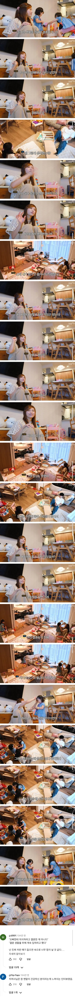

한국남자와 결혼한 일본인 아내의 마인드
댓글
한국 여자들을 과소평가하네. 맥도날드 까지 가는 여자는 겁나 멍청한 여자임. 애초에 결혼 못 할 팔자.
다 어떻게든 결혼한다~ 그거 지뢰 밟는 남자들이 존나 불쌍한거지 ㅋㅋ
아님 못함 남자들이 똑똑해져서 안해줌
그러니 30대 미혼율이 치솟는거지
아냐 여자들은 결혼 가능함 지들 눈이 높아서 아직 나라면 좋은 남자를 만날수있다 이지랄해서 늙어가는거지 30대면 아아직 40대랑 만나면 결혼 쉽게 가능함. 40대 넘어가면 쉽지 않겠지만.
이거 비추수 궁금하당 ㅋㅋㅋ 맥도날드 할머니 완전 발작버튼이던데
그게 제일 다른점이긴 한데 그래도 100에 5명 정도는 있음
일본에서 외벌이로 생활 가능한건 진짜 대단한거니까
???: "니 애 낳아주잖아"
???: 애 낳는 기계가 아녀욧!
???: 니 애 낳아줬잖아!
결국 애 낳는 기계가.. 맞았습니다!
누구는 아빠를 구하고 누구는 파트너를 찾는구나
이집 딸내미들 너무 귀여워
그런 아내에게 이순신장군 초상화
??? : 누구누구는 이번에 남편이 백 사줬다는데
애기들 너무 귀여움 ㅋㅋ
저게 설령 진심이 아닌 가식이여도
진짜 말이라도 저렇게 해줘야 좋은데
그것마저 '진다는 생각'을 가진 여자들이
ㅈㄴ 많으니깐 이러지 ㅋㅋ
서로가 희생하고 서로가 격려하고 서로가 보듬어주는거
이게 어려운거임?
현실보면 어렵나봐..
한국도 이젠 맞벌이 비율 60% 넘어가던데 이제 결혼하는 사람들은 저렇게 되지않을까 이젠 외벌이로는 집 못사는 지경이라
30대 초반인데 주변에 외벌이 생각보다 너무 많아서 놀랐음
맞벌이 60%라면 40%는 외벌이라는 거니까..
어떻게 생활이 가능하지? 싶지만 할만하니까 하는거겠지 뭐
나 포함 내 주변에는 다 맞벌이하는데도 빡센데 외벌이는 진짜 어떻게 생활하는지 궁금 한 쪽이 엄청 많이 버나?
나도 몰라서 궁금함...ㅋㅋ 그렇다고 물어볼 수도 없고
크게 대단한 직장들은 아니고 많이벌어봐야 500인데
거기서 주담대 갚고 애도 있음
나도 궁금했는데 옆에서 보니까 맞벌이하면서 힘들어서 나가는 부수적 비용을
(너무 피곤해서 외식, 배달하기 같은거) 최소화하더라
한쪽이 늘 집에 있으면 애 갑자기 아프거나해도 부담도 적고
애한테 신경도 많이 써줄수 있고 장점도 있음.
손 확실히 덜가기 시작할때쯤엔 애한테 돈이 많이들어가기 시작하니까
한쪽이 승진제대로 해서 벌이가 괜찮아지면
이제 좀 숨돌리면서 살수 있는거고 아니면 직장구하거나 알바라도 하더라
맞벌이하면서도 이렇게 살면 베스트인데
나는 늦게 결혼해서(30대 중반 결혼 출산)
40살 되니까 체력 극하강해서 둘다 직장 다녀오면 넉다운되서
그냥 오늘 배달시키고 청소는 흐린눈하면서 살자 이러고 있음
애기 둘이면 외벌이가 나을수도
주위에 거의 대부분 맞벌이고 서로 힘든거 아는 사람들끼리는 설령 나중에 한명이 전업주부하더라도 (남자가 하는 경우 주위에도있음) 잘살더라
나도 우리 와이프 나보다 많이 벌고 돈도 많이 들고와서 모시고삼
저게 신기한게 아니라 정상이고 기본인데
X녀 때문에 저게 대단하게 되어버림
90년대 초까지만 해도 엄마들이 집에서 남편 월급 받아 살림만 한게 아니라
어떻게든 적게 쓰고 부수입 얻으려고 짬짬히 공장 나가서 일하고 그랬어
지금 처럼 남편 돈 못번다고 닥달 하는건 90년대 후반 IMF 때쯤 부터 임
??????: 사모님 제비 한 마리 기르시겠습니까
부부가 서로 상대방을 안쓰럽게 여기면 잘 사는듯
세상에 당연한 것 없고 서로가 서로의 노고를 인정해줘야
언제나 생각나는건 내 전여친들....
???: 나 힘든데 결혼할까?
업혀가려고 비교하려고 하는 결혼이 많아서 그럼
SINK되는거 맨날 보다가 저거 보니까 감동
남자랑 여자가 서로 저렇게 생각하고 살면 결혼 깨질 일이 없지

저런 착한사람한테 이순신을
"우리 아빠 늙어서 젊은 뉴아빠 필요한데 미네랄 많은순으로 줄서봐"
갓카코...
우리 와이프랑 똑같은 생각을 가지고 있네요
한국여자에게 저런거 기대하지말아라 남자가 월급이 더 작다 결혼안함 그리고 38부터 결혼정보업체 찾아다니다 맥도날드 할머니 되는거지